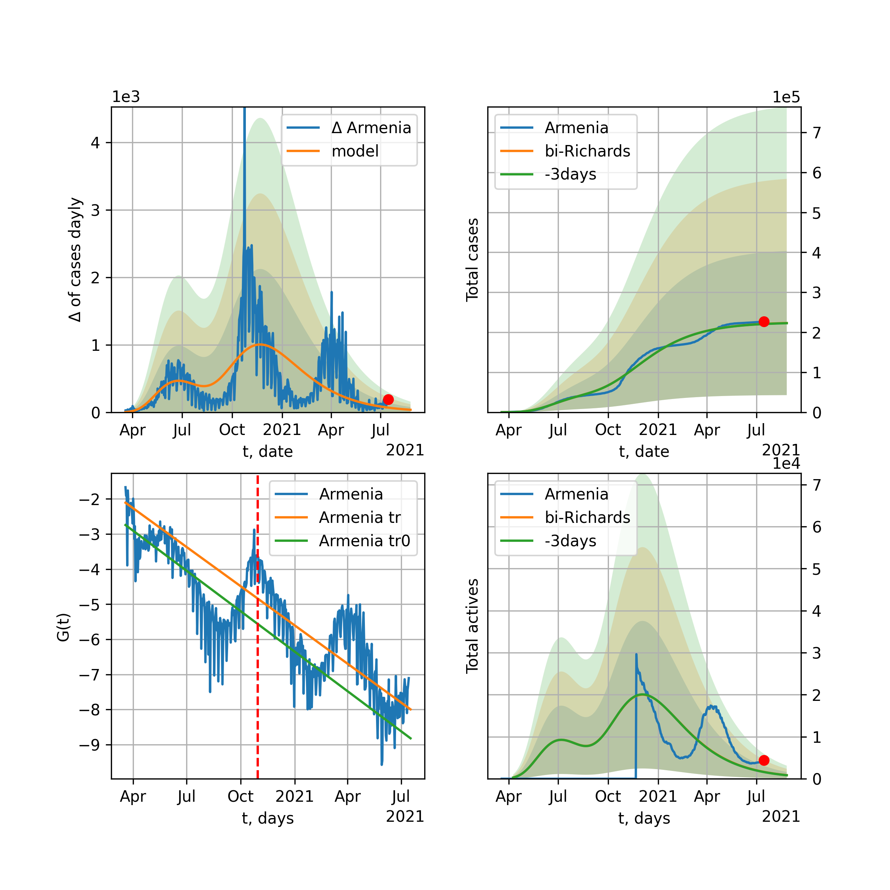
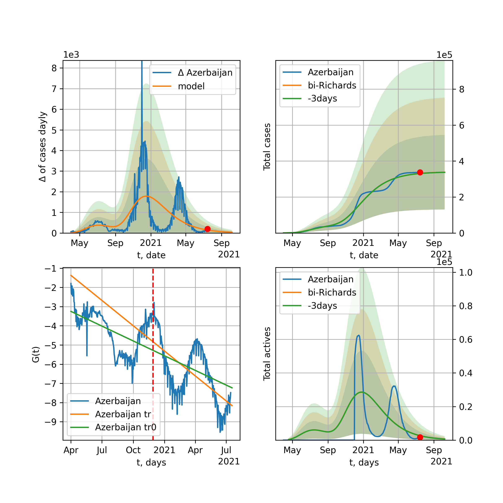

Multi-logistic model of COVID-19 dynamics
Developed and maintained by Algirdas MaknickasThe number of COVID-19 cases \(K (t)\) after transformation is expressed as follows: $$G(t)=\log{\dfrac{1}{K(t)^2}\dfrac{d K(t)}{d t}}=\log{\dfrac{k}{L}}-k(t-t_0)$$ was used to decide how many humps the model should have. It follows from a logistic function that describes the change in people infected with the virus and is expressed as: $$K(t) = \dfrac{L}{1+e^{-k (t-t_0)}}=\dfrac{L}{2}+\dfrac{L}{2}\tanh{\dfrac{k(t-t_0)}{2}}$$ which is solution of the differential logistic growth equation $$\frac{dK}{dt}=k K \left(1 - \frac{K}{L}\right)$$ where t0 is $$t_0=\dfrac{1}{k}\log{\dfrac{L-K(0)}{K(0)}}$$ k is the exponential growth factor, and L is the quencher coefficient of growth and the lower it is, the faster the growth is extinguished. In addition, Richards' growth function $$R(t) = \dfrac{L}{\left(1+e^{-k \nu (t-t_0)}\right)^\frac{1}{\nu}}$$ were presended, where \(G_R(t)\) expressed as follow $$G_R(t)=\log{\dfrac{1}{K(t)^{1+\nu}}\dfrac{d K(t)}{d t}}=\log{\dfrac{k}{L^\nu}}-k\nu (t-t_0). $$ The following is the result of the world and some countries K (t) infected dynamics model and its comparison with observed experimentally observed results for the determination of parameters using the least squares method [4]: $$ \min{\sum_{i=1}^{N}\left(K(t_i,a)-y_i\right)^2}$$ where K (t, a) is the selected or logistic function $$K(t,a) = \dfrac{a_0}{1+e^{-a_1 (t-a_2)}}$$ or bi-logistic function [3] $$K(t,a) = \dfrac{a_0}{1+e^{-a_1 (t-a_2)}}+\dfrac{a_3}{1+e^{-a_4 (t-a_5)}}$$ or a tri-logistic function $$K(t,a) = \dfrac{a_0}{1+e^{-a_1 (t-a_2)}}+\dfrac{a_3}{1+e^{-a_4 (t-a_5)}}+\dfrac{a_6}{1+e^{-a_7 (t-a_8)}}$$ Finally, q-logistic and rq-logistic models replaced most of multy-logistic country models, where \(K_Q(t)=K((t-t_0)(t-t_1))\) and \(K_{RQ}(t)=R((t-t_0)(t-t_1))\) . The fourth graph shows the ratio $$S(t)=\dfrac{K_a^\prime(t)}{K^\prime(t)}$$ where \(K_a(t)\) is the number of active cases, \(K(t)\) is the number total cases, after averaging those values for three days. This size in the rise stats in Korea and the world was about 1 and is currently 0.8 . In addition, standard deviation bands for model and model derivative for 1, 2 and 3 sigma, respectively, were added. The red dot in the graphs means the value of current today . Obviously, the coefficient \(L\) indicates the country’s actions in actively disinfecting, and the coefficient k is proportional to the amount of social contacts. Therefore, the reduction or disinfection of the L factor, disinfection and disinfection again are on the agenda today. It should be mentioned that it is only possible to say exactly what logistical growth rate COVID-19 develops after the end of the pandemic, but from the current point of view it can be seen that the model output can vary by several tens of percent to 2x, and the standard deviation of experimental data . However, there is another argument that leads to the assumption that it contains simple logistical dynamics. These are R (t) linear approximations fairly accurate for all countries and a coefficient of determination close to 0.9, and as the trend changes direction and this coefficient begins to decrease, the accuracy of the trend model increases again with the transition to a humpback graph. Therefore, the results of the simple multi-logistic function model will continue to be presented, bearing in mind that the predicted result is the lower limit of the possible scenarios. Assuming that all countries choose a slow (Korean scenario) exit from quarantine, a second hump with coefficients of 'scenario' was added (without optimisation) to predict the results of the model.
World

World data at: 2021-07-15
10 day model MAPE: 0.000241
model: bi-Richards
coeffs: [-1.00036430e+06 -2.10963355e-01 -3.01261207e+01 -2.97137493e-01]
rational stdev: 5.411201
forecast at the end of period: +426 days
deltaDaycases: 8398
total cases: 227920801 ± 1233325269
total death: 4904677 ± 79620579
bi-Richards approximation splitting point: 397
actives k: 33
trend coefficient of determination: 0.552017
intercept: 1.089810
slope: -0.002626
trend coefficient of determination: 0.704448
intercept: 5.243985
slope: -0.012151
European Union

European Union data at: 2021-07-15
10 day model MAPE: 0.000587
model: bi-Richards
coeffs: [1.79495338e+07 7.55499964e-02 2.85259737e+02 3.42866550e-01]
rational stdev: 1.194451
forecast at the end of period: +121 days
deltaDaycases: 734
total cases: 33837920 ± 40417735
total death: 755899 ± 2708652
bi-Richards approximation splitting point: 335
actives k: 35
trend coefficient of determination: 0.154909
intercept: -9.443806
slope: -0.003397
trend coefficient of determination: 0.705262
intercept: -2.317130
slope: -0.024819
Brazil

Brazil data at: 2021-07-15
10 day model MAPE: 0.000596
model: bi-Richards
coeffs: [ 1.94536483e+07 7.79878817e-01 -6.64860979e+01 1.19733763e-02]
rational stdev: 0.205702
forecast at the end of period: +296 days
deltaDaycases: 4804
total cases: 25498508 ± 5245103
total death: 713560 ± 440342
bi-Richards approximation splitting point: 220
actives k: 17
trend coefficient of determination: 0.516145
intercept: -2.069760
slope: -0.014812
trend coefficient of determination: 0.052103
intercept: -5.162065
slope: -0.001297
Russia

Russia data at: 2021-07-15
10 day model MAPE: 0.011174
model: bi-Richards
coeffs: [ 5.68846267e+06 8.14603010e-01 -3.00548293e+01 1.05899036e-02]
rational stdev: 0.234201
forecast at the end of period: +226 days
deltaDaycases: 7976
total cases: 9016690 ± 2111717
total death: 223902 ± 157314
bi-Richards approximation splitting point: 378
actives k: 26
trend coefficient of determination: 0.660259
intercept: -3.402534
slope: -0.007743
trend coefficient of determination: 0.763870
intercept: -11.551673
slope: 0.012645
USA

USA data at: 2021-07-15
10 day model MAPE: 0.001198
model: bi-Richards
coeffs: [1.21289248e+07 1.17011645e-01 2.60323222e+02 4.31624567e-01]
rational stdev: 0.194709
forecast at the end of period: +149 days
deltaDaycases: 15369
total cases: 39175873 ± 7627900
total death: 700949 ± 409443
bi-Richards approximation splitting point: 268
actives k: 52
trend coefficient of determination: 0.633831
intercept: -8.236234
slope: -0.016901
trend coefficient of determination: 0.885246
intercept: -6.589131
slope: -0.018474
Spain

Spain data at: 2021-07-15
10 day model MAPE: 0.009157
model: bi-Richards
coeffs: [2.04252452e+06 5.78558426e+00 9.92977766e+01 4.23901822e-03]
rational stdev: 0.372973
forecast at the end of period: +16 days
deltaDaycases: 512
total cases: 3760967 ± 1402740
total death: 74942 ± 83854
bi-Richards approximation splitting point: 306
actives k: 52
trend coefficient of determination: 0.022458
intercept: -4.597661
slope: -0.002218
trend coefficient of determination: 0.386043
intercept: -2.348196
slope: -0.009202
Italy

Italy data at: 2021-07-15
10 day model MAPE: 0.000227
model: bi-Richards
coeffs: [1.55057778e+06 2.93913693e+00 2.69722712e+02 1.31950843e-02]
rational stdev: 2.137745
forecast at the end of period: +86 days
deltaDaycases: 21
total cases: 4294742 ± 9181063
total death: 128330 ± 823010
bi-Richards approximation splitting point: 368
actives k: 28
trend coefficient of determination: 0.037374
intercept: -4.581932
slope: -0.002725
trend coefficient of determination: 0.892716
intercept: 6.906808
slope: -0.031147
United Kingdom

United Kingdom data at: 2021-07-15
10 day model MAPE: 0.002395
model: bi-Richards
coeffs: [5.97011884e+04 5.02248714e-01 1.62864935e+01 8.02452229e-01]
rational stdev: 0.271675
forecast at the end of period: +86 days
deltaDaycases: 0
total cases: 4422321 ± 1201432
total death: 107682 ± 87763
bi-Richards approximation splitting point: 455
actives k: 48
trend coefficient of determination: 0.759681
intercept: -12.347719
slope: -0.016597
trend coefficient of determination: 0.897650
intercept: -39.358439
slope: 0.045914
France

France data at: 2021-07-15
10 day model MAPE: 0.002232
model: bi-Richards
coeffs: [3.83965937e+06 3.09692903e-02 3.54791629e+02 1.02694429e+00]
rational stdev: 2.483091
forecast at the end of period: +51 days
deltaDaycases: 550
total cases: 5946892 ± 14766675
total death: 113598 ± 846222
bi-Richards approximation splitting point: 300
actives k: 70
trend coefficient of determination: 0.514955
intercept: -15.544865
slope: -0.015142
trend coefficient of determination: 0.685009
intercept: -13.187604
slope: -0.021809
Germany

Germany data at: 2021-07-15
10 day model MAPE: 0.002779
model: bi-Richards
coeffs: [ 3.95136829e+06 1.51992367e+00 -9.17978676e+01 8.13930980e-03]
rational stdev: 0.171939
forecast at the end of period: +30 days
deltaDaycases: 3029
total cases: 3931294 ± 675943
total death: 96346 ± 49696
bi-Richards approximation splitting point: 215
actives k: 17
trend coefficient of determination: 0.300563
intercept: -3.756825
slope: -0.012550
trend coefficient of determination: 0.757200
intercept: 0.131364
slope: -0.016124
Turkey

Turkey data at: 2021-07-15
10 day model MAPE: 0.003383
model: bi-Richards
coeffs: [2.51738332e+06 1.07989208e+00 3.29530104e+02 5.53354820e-02]
rational stdev: 0.206509
forecast at the end of period: +16 days
deltaDaycases: 192
total cases: 5416903 ± 1118639
total death: 49586 ± 30719
bi-Richards approximation splitting point: 378
actives k: 17
trend coefficient of determination: 0.328387
intercept: -4.601670
slope: -0.005332
trend coefficient of determination: 0.866014
intercept: 7.070793
slope: -0.032296
Iran

Iran data at: 2021-07-15
10 day model MAPE: 0.012470
model: bi-Richards
coeffs: [1.84760184e+06 2.08707589e+00 2.56937210e+02 1.26708041e-02]
rational stdev: 0.248127
forecast at the end of period: +170 days
deltaDaycases: 63
total cases: 3515956 ± 872402
total death: 87889 ± 65422
bi-Richards approximation splitting point: 380
actives k: 25
trend coefficient of determination: 0.555469
intercept: -3.218075
slope: -0.007083
trend coefficient of determination: 0.121396
intercept: -3.163802
slope: -0.005274
Canada

Canada data at: 2021-07-15
10 day model MAPE: 0.000290
model: bi-Richards
coeffs: [5.29799589e+05 1.76079542e-01 3.82609176e+02 2.98753069e-01]
rational stdev: 0.434324
forecast at the end of period: +72 days
deltaDaycases: 6
total cases: 1428230 ± 620314
total death: 26583 ± 34636
bi-Richards approximation splitting point: 400
actives k: 17
trend coefficient of determination: 0.447553
intercept: -6.187908
slope: -0.009655
trend coefficient of determination: 0.895909
intercept: 8.463886
slope: -0.042087
South Africa

South Africa data at: 2021-07-15
10 day model MAPE: 0.030717
model: bi-Richards
coeffs: [ 1.17039545e+06 3.36747317e+00 -3.15459169e-02 5.23237637e-03]
rational stdev: 0.892531
forecast at the end of period: +121 days
deltaDaycases: 85
total cases: 1851463 ± 1652488
total death: 54208 ± 145146
bi-Richards approximation splitting point: 235
actives k: 17
trend coefficient of determination: 0.794774
intercept: -1.614165
slope: -0.020304
trend coefficient of determination: 0.024924
intercept: -5.217222
slope: -0.002245
Belgium

Belgium data at: 2021-07-13
10 day model MAPE: 0.000003
model: bi-Richards
coeffs: [4.06962139e+05 4.89885260e-01 2.73247534e+02 5.76811458e-02]
rational stdev: 3.074545
forecast at the end of period: +121 days
deltaDaycases: 17
total cases: 1115366 ± 3429243
total death: 25512 ± 235313
bi-Richards approximation splitting point: 366
actives k: 61
trend coefficient of determination: 0.189853
intercept: -4.529740
slope: -0.006063
trend coefficient of determination: 0.704864
intercept: 1.926608
slope: -0.021066
Peru

Peru data at: 2021-07-15
10 day model MAPE: 0.000770
model: bi-Richards
coeffs: [1.11873162e+06 1.26710219e+00 1.59894455e+02 1.55474983e-02]
rational stdev: 0.270238
forecast at the end of period: +86 days
deltaDaycases: 416
total cases: 2182435 ± 589776
total death: 203643 ± 165095
bi-Richards approximation splitting point: 267
actives k: 10
trend coefficient of determination: 0.906524
intercept: -1.985016
slope: -0.017603
trend coefficient of determination: 0.061138
intercept: -5.144722
slope: -0.002516
Netherlands

Netherlands data at: 2021-07-15
10 day model MAPE: 0.005747
model: bi-Richards
coeffs: [4.80789171e+05 3.37820010e+00 2.85312811e+02 1.20066865e-02]
rational stdev: 2.406511
forecast at the end of period: +86 days
deltaDaycases: 25
total cases: 1725564 ± 4152590
total death: 17365 ± 125367
bi-Richards approximation splitting point: 394
actives k: 35
trend coefficient of determination: 0.062865
intercept: -4.280077
slope: -0.002869
trend coefficient of determination: 0.427123
intercept: 3.496460
slope: -0.022258
India

India data at: 2021-07-15
10 day model MAPE: 0.003740
model: bi-Richards
coeffs: [1.97240203e+07 8.18692871e-02 4.12469766e+02 8.92796502e-01]
rational stdev: 0.229245
forecast at the end of period: +86 days
deltaDaycases: 35
total cases: 30725406 ± 7043632
total death: 408554 ± 280976
bi-Richards approximation splitting point: 322
actives k: 13
trend coefficient of determination: 0.916257
intercept: -9.576250
slope: -0.040710
trend coefficient of determination: 0.021556
intercept: -19.216272
slope: -0.003232
Switzerland

Switzerland data at: 2021-07-15
10 day model MAPE: 0.002561
model: bi-Richards
coeffs: [ 5.93491262e+05 9.41707746e+00 -5.06483392e+01 2.09865630e-03]
rational stdev: 0.242694
forecast at the end of period: +86 days
deltaDaycases: 96
total cases: 699224 ± 169697
total death: 10776 ± 7845
bi-Richards approximation splitting point: 235
actives k: 43
trend coefficient of determination: 0.046195
intercept: -4.427629
slope: -0.005477
trend coefficient of determination: 0.829150
intercept: 0.182257
slope: -0.016412
Ecuador

Ecuador data at: 2021-07-15
10 day model MAPE: 0.002653
model: bi-Richards
coeffs: [ 7.78036801e+05 2.07502841e-01 -3.84578337e+02 2.35676524e-02]
rational stdev: 0.136773
forecast at the end of period: +156 days
deltaDaycases: 836
total cases: 643573 ± 88023
total death: 29776 ± 12217
bi-Richards approximation splitting point: 80
actives k: 26
trend coefficient of determination: 0.278459
intercept: -2.327791
slope: -0.047887
trend coefficient of determination: 0.189975
intercept: -4.649465
slope: -0.003952
Portugal

Portugal data at: 2021-07-15
10 day model MAPE: 0.126535
model: bi-Richards
coeffs: [ 2.42362896e+06 5.98220182e-01 -9.12229498e+00 1.10097023e-02]
rational stdev: 0.608452
forecast at the end of period: +436 days
deltaDaycases: 2505
total cases: 2824685 ± 1718685
total death: 52757 ± 96300
bi-Richards approximation splitting point: 423
actives k: 21
trend coefficient of determination: 0.442025
intercept: -3.159229
slope: -0.008399
trend coefficient of determination: 0.833110
intercept: -21.862672
slope: 0.031918
Saudi Arabia

Saudi Arabia data at: 2021-07-15
10 day model MAPE: 0.001624
model: bi-Richards
coeffs: [3.02500466e+05 2.60749836e-02 4.31119309e+02 5.69524422e-01]
rational stdev: 0.086392
forecast at the end of period: +506 days
deltaDaycases: 2
total cases: 659260 ± 56954
total death: 10466 ± 2712
bi-Richards approximation splitting point: 300
actives k: 17
trend coefficient of determination: 0.931116
intercept: -7.156207
slope: -0.030966
trend coefficient of determination: 0.787783
intercept: -17.328552
slope: 0.008849
Sweden

Sweden data at: 2021-07-15
10 day model MAPE: 0.000741
model: bi-Richards
coeffs: [3.22414646e+05 2.45132245e+00 3.26174173e+02 2.01201126e-02]
rational stdev: 0.523674
forecast at the end of period: +121 days
deltaDaycases: 0
total cases: 1100394 ± 576248
total death: 14693 ± 23083
bi-Richards approximation splitting point: 400
actives k: 28
trend coefficient of determination: 0.279069
intercept: -3.534642
slope: -0.005811
trend coefficient of determination: 0.897300
intercept: 12.265357
slope: -0.042218
Pakistan

Pakistan data at: 2021-07-15
10 day model MAPE: 0.006231
model: bi-Richards
coeffs: [ 1.05302717e+06 5.80898450e-01 -1.44354905e+02 1.41867622e-02]
rational stdev: 3.286268
forecast at the end of period: +401 days
deltaDaycases: 133
total cases: 1359917 ± 4469051
total death: 31408 ± 309645
bi-Richards approximation splitting point: 262
actives k: 26
trend coefficient of determination: 0.657551
intercept: -2.686945
slope: -0.016342
trend coefficient of determination: 0.260814
intercept: -4.104204
slope: -0.004851
Ireland

Ireland data at: 2021-07-15
10 day model MAPE: 0.006915
model: bi-Richards
coeffs: [2.47769522e+05 1.85503341e-02 3.36176738e+02 2.07884792e+00]
rational stdev: 0.319378
forecast at the end of period: +121 days
deltaDaycases: 0
total cases: 262307 ± 83775
total death: 4676 ± 4480
bi-Richards approximation splitting point: 82
actives k: 61
trend coefficient of determination: 0.885837
intercept: -9.857212
slope: -0.249075
trend coefficient of determination: 0.680667
intercept: -25.078545
slope: -0.015268
Mexico

Mexico data at: 2021-07-15
10 day model MAPE: 0.005537
model: bi-Richards
coeffs: [1.20784804e+06 3.01369386e+00 8.18399534e+01 7.38760314e-03]
rational stdev: 0.230510
forecast at the end of period: +296 days
deltaDaycases: 5
total cases: 2524127 ± 581837
total death: 226280 ± 156479
bi-Richards approximation splitting point: 260
actives k: 17
trend coefficient of determination: 0.916347
intercept: -1.928524
slope: -0.015414
trend coefficient of determination: 0.535040
intercept: -2.152511
slope: -0.010382
Singapore

Singapore data at: 2021-07-15
10 day model MAPE: 0.000122
model: bi-Richards
coeffs: [5.45809764e+03 1.80272316e+00 6.10418318e-02 6.85262147e-03]
rational stdev: 0.274164
forecast at the end of period: +156 days
deltaDaycases: 3
total cases: 64041 ± 17557
total death: 36 ± 29
bi-Richards approximation splitting point: 410
actives k: 26
trend coefficient of determination: 0.705822
intercept: -3.182079
slope: -0.017006
trend coefficient of determination: 0.174995
intercept: -4.189437
slope: -0.008578
Chile

Chile data at: 2021-07-15
10 day model MAPE: 0.003086
model: bi-Richards
coeffs: [1.02927212e+06 1.60609285e+00 1.29594033e+02 1.01765489e-02]
S.Korea scenario coeffs: [0.36242246, 2.56241634, 1.84890887, 0.13324732]
rational stdev: 0.329842
forecast at the end of period: +296 days
deltaDaycases: 60
total cases: 1884172 ± 621479
total death: 40421 ± 39997
bi-Richards approximation splitting point: 370
actives k: 10
trend coefficient of determination: 0.673805
intercept: -2.729437
slope: -0.010866
trend coefficient of determination: 0.572862
intercept: -1.088339
slope: -0.010383
Israel

Israel data at: 2021-07-15
10 day model MAPE: 0.000553
model: bi-Richards
coeffs: [5.25369371e+05 7.73641593e-02 2.66486056e+02 6.73348835e-01]
rational stdev: 0.244570
forecast at the end of period: +16 days
deltaDaycases: 1
total cases: 842285 ± 205997
total death: 6389 ± 4687
bi-Richards approximation splitting point: 270
actives k: 11
trend coefficient of determination: 0.412023
intercept: -10.833526
slope: -0.012175
trend coefficient of determination: 0.638991
intercept: -3.930285
slope: -0.035380
Austria

Austria data at: 2021-07-15
10 day model MAPE: 0.001300
model: bi-Richards
coeffs: [3.11245848e+05 3.50679124e-02 3.78112328e+02 1.09667443e+00]
rational stdev: 12.623301
forecast at the end of period: +212 days
deltaDaycases: 0
total cases: 659087 ± 8319859
total death: 10832 ± 410206
bi-Richards approximation splitting point: 310
actives k: 13
trend coefficient of determination: 0.397565
intercept: -12.344948
slope: -0.021065
trend coefficient of determination: 0.769905
intercept: -11.649256
slope: -0.022478
Belarus

Belarus data at: 2021-07-15
10 day model MAPE: 0.004419
model: bi-Richards
coeffs: [ 3.61591601e+05 1.84536880e+00 -8.81715056e+01 7.09385904e-03]
rational stdev: 0.178727
forecast at the end of period: +156 days
deltaDaycases: 63
total cases: 449420 ± 80323
total death: 3437 ± 1842
bi-Richards approximation splitting point: 262
actives k: 10
trend coefficient of determination: 0.256101
intercept: -3.614418
slope: -0.008787
trend coefficient of determination: 0.773641
intercept: -2.647827
slope: -0.008238
Japan

Japan data at: 2021-07-15
10 day model MAPE: 0.003313
model: bi-Richards
coeffs: [ 1.02093158e+06 9.55678039e-01 -1.12623755e+02 9.15213373e-03]
rational stdev: 0.354815
forecast at the end of period: +58 days
deltaDaycases: 1777
total cases: 961226 ± 341057
total death: 17406 ± 18527
bi-Richards approximation splitting point: 310
actives k: 11
trend coefficient of determination: 0.050044
intercept: -3.961090
slope: -0.003605
trend coefficient of determination: 0.401118
intercept: -2.003938
slope: -0.007928
China

China data at: 2021-07-15
10 day model MAPE: 0.000184
model: bi-Richards
coeffs: [ 1.30420941e+04 6.32636822e-01 -5.24419646e+02 9.08925428e-03]
rational stdev: 0.053359
forecast at the end of period: +86 days
deltaDaycases: 9
total cases: 93099 ± 4967
total death: 4682 ± 749
bi-Richards approximation splitting point: 120
actives k: 17
trend coefficient of determination: 0.817963
intercept: -2.285478
slope: -0.076401
trend coefficient of determination: 0.029782
intercept: -9.184194
slope: 0.001278
Qatar

Qatar data at: 2021-07-15
10 day model MAPE: 0.000544
model: bi-Richards
coeffs: [8.19152083e+04 4.85983519e-02 3.50041611e+02 6.90247945e-01]
S.Korea scenario coeffs: [0.36242246, 2.56241634, 1.84890887, 0.13324732]
rational stdev: 0.178507
forecast at the end of period: +86 days
deltaDaycases: 4
total cases: 226317 ± 40399
total death: 605 ± 323
bi-Richards approximation splitting point: 364
actives k: 17
trend coefficient of determination: 0.617817
intercept: -10.250565
slope: -0.016255
trend coefficient of determination: 0.921409
intercept: -3.735136
slope: -0.026713
Poland

Poland data at: 2021-07-15
10 day model MAPE: 0.000301
model: bi-Richards
coeffs: [1.60126623e+06 2.98879132e-02 2.66129898e+02 3.40090925e+00]
rational stdev: 2.198716
forecast at the end of period: +142 days
deltaDaycases: 0
total cases: 2874646 ± 6320532
total death: 75021 ± 494849
bi-Richards approximation splitting point: 234
actives k: 21
trend coefficient of determination: 0.933465
intercept: -39.049806
slope: -0.074330
trend coefficient of determination: 0.968765
intercept: -37.329907
slope: -0.066724
UAE

UAE data at: 2021-07-15
10 day model MAPE: 0.006064
model: bi-Richards
coeffs: [6.93200727e+05 1.41632932e-02 3.56448106e+02 1.10210891e+00]
rational stdev: 0.309276
forecast at the end of period: +226 days
deltaDaycases: 37
total cases: 711247 ± 219971
total death: 2042 ± 1894
bi-Richards approximation splitting point: 144
actives k: 11
trend coefficient of determination: 0.578755
intercept: -10.291209
slope: -0.055006
trend coefficient of determination: 0.895328
intercept: -15.170605
slope: -0.011286
Romania

Romania data at: 2021-07-15
10 day model MAPE: 0.000144
model: bi-Richards
coeffs: [3.26496056e+05 1.07207219e-01 3.63224016e+02 5.52399153e-01]
rational stdev: 0.385116
forecast at the end of period: +79 days
deltaDaycases: 0
total cases: 1082611 ± 416930
total death: 34281 ± 39606
bi-Richards approximation splitting point: 360
actives k: 17
trend coefficient of determination: 0.773465
intercept: -7.027767
slope: -0.018196
trend coefficient of determination: 0.932160
intercept: 5.236125
slope: -0.047178
Panama

Panama data at: 2021-07-15
10 day model MAPE: 0.006629
model: bi-Richards
coeffs: [1.90279806e+05 8.86399605e+00 1.06226718e+02 3.56633301e-03]
rational stdev: 0.204978
forecast at the end of period: +128 days
deltaDaycases: 6
total cases: 385576 ± 79034
total death: 6129 ± 3768
bi-Richards approximation splitting point: 267
actives k: 17
trend coefficient of determination: 0.744379
intercept: -2.477738
slope: -0.012172
trend coefficient of determination: 0.417172
intercept: -2.459513
slope: -0.009524
Ukraine

Ukraine data at: 2021-07-15
10 day model MAPE: 0.000469
model: bi-Richards
coeffs: [1.06472384e+06 4.87631919e-02 3.22387075e+02 1.17340141e+00]
rational stdev: 0.127309
forecast at the end of period: +51 days
deltaDaycases: 8
total cases: 2240863 ± 285281
total death: 52637 ± 20103
bi-Richards approximation splitting point: 317
actives k: 35
trend coefficient of determination: 0.960534
intercept: -15.207410
slope: -0.023805
trend coefficient of determination: 0.917770
intercept: -7.417206
slope: -0.043355
Indonesia

Indonesia data at: 2021-07-15
10 day model MAPE: 0.006800
model: bi-Richards
coeffs: [8.37631541e+07 6.36120415e-02 5.44401558e+02 4.36063779e-01]
rational stdev: 0.296604
forecast at the end of period: +464 days
deltaDaycases: 85
total cases: 85575349 ± 25381995
total death: 2202837 ± 1960111
bi-Richards approximation splitting point: 430
actives k: 17
trend coefficient of determination: 0.873582
intercept: -6.683220
slope: -0.013901
trend coefficient of determination: 0.931691
intercept: -27.097399
slope: 0.034268
Bangladesh

Bangladesh data at: 2021-07-15
10 day model MAPE: 0.046647
model: bi-Richards
coeffs: [7.36935574e+05 1.37527425e+00 7.80011377e+01 9.30857353e-03]
rational stdev: 0.305459
forecast at the end of period: +184 days
deltaDaycases: 498
total cases: 1265526 ± 386565
total death: 20401 ± 18694
bi-Richards approximation splitting point: 345
actives k: 35
trend coefficient of determination: 0.716394
intercept: -2.419878
slope: -0.013841
trend coefficient of determination: 0.180642
intercept: -9.477479
slope: 0.008646
South_Korea

South Korea data at: 2021-07-15
10 day model MAPE: 0.008803
model: bi-Richards
coeffs: [ 7.80423646e+04 2.49926044e+00 -7.28121001e+01 5.55945504e-03]
rational stdev: 0.075517
forecast at the end of period: +506 days
deltaDaycases: 0
total cases: 262493 ± 19822
total death: 3075 ± 696
bi-Richards approximation splitting point: 220
actives k: 26
trend coefficient of determination: 0.042659
intercept: -5.997252
slope: 0.002880
trend coefficient of determination: 0.243720
intercept: -3.953874
slope: -0.003437
Moldova

Moldova data at: 2021-07-15
10 day model MAPE: 0.000399
model: bi-Richards
coeffs: [6.50807066e+04 9.79862094e-01 3.18963708e+02 6.15287577e-02]
rational stdev: 0.262098
forecast at the end of period: +16 days
deltaDaycases: 7
total cases: 257122 ± 67391
total death: 6203 ± 4877
bi-Richards approximation splitting point: 360
actives k: 17
trend coefficient of determination: 0.685904
intercept: -3.170796
slope: -0.009547
trend coefficient of determination: 0.837084
intercept: 6.726107
slope: -0.033927
Denmark

Denmark data at: 2021-07-15
10 day model MAPE: 0.001302
model: bi-Richards
coeffs: [1.65804641e+05 7.69862793e-01 8.83085926e+01 1.66341256e-02]
rational stdev: 1.443875
forecast at the end of period: +226 days
deltaDaycases: 37
total cases: 346856 ± 500816
total death: 2903 ± 12574
bi-Richards approximation splitting point: 322
actives k: 17
trend coefficient of determination: 0.017087
intercept: -4.281064
slope: -0.002157
trend coefficient of determination: 0.065797
intercept: -4.938477
slope: -0.003262
Serbia

Serbia data at: 2021-07-15
10 day model MAPE: 0.000216
model: bi-Richards
coeffs: [2.87035224e+05 1.90721933e+00 2.40994488e+02 2.58692167e-02]
rational stdev: 19.595844
forecast at the end of period: +16 days
deltaDaycases: 18
total cases: 719252 ± 14094352
total death: 7089 ± 416744
bi-Richards approximation splitting point: 360
actives k: 35
trend coefficient of determination: 0.005060
intercept: -5.014771
slope: -0.000602
trend coefficient of determination: 0.873301
intercept: 9.087459
slope: -0.043228
Kuwait

Kuwait data at: 2021-07-15
10 day model MAPE: 0.007516
model: bi-Richards
coeffs: [3.41837701e+05 4.28550087e-01 9.58021962e+01 2.60251556e-02]
rational stdev: 0.262295
forecast at the end of period: +205 days
deltaDaycases: 191
total cases: 495276 ± 129908
total death: 2818 ± 2217
bi-Richards approximation splitting point: 270
actives k: 17
trend coefficient of determination: 0.848086
intercept: -2.666056
slope: -0.013891
trend coefficient of determination: 0.264282
intercept: -7.104879
slope: 0.003370
Philippines

Philippines data at: 2021-07-15
10 day model MAPE: 0.007529
model: bi-Richards
coeffs: [1.10164846e+06 7.81704250e-02 3.52222214e+02 3.09089746e-01]
rational stdev: 2.204466
forecast at the end of period: +86 days
deltaDaycases: 454
total cases: 1585163 ± 3494438
total death: 27982 ± 185056
bi-Richards approximation splitting point: 310
actives k: 17
trend coefficient of determination: 0.855159
intercept: -4.833062
slope: -0.018451
trend coefficient of determination: 0.009812
intercept: -9.059334
slope: -0.001129
Norway

Norway data at: 2021-07-15
10 day model MAPE: 0.003617
model: bi-Richards
coeffs: [6.00580789e+04 6.30432422e+00 2.39832123e+02 5.40212159e-03]
rational stdev: 0.499422
forecast at the end of period: +72 days
deltaDaycases: 5
total cases: 133193 ± 66519
total death: 791 ± 1185
bi-Richards approximation splitting point: 378
actives k: 26
trend coefficient of determination: 0.023400
intercept: -4.627664
slope: -0.001985
trend coefficient of determination: 0.795708
intercept: 3.022185
slope: -0.020051
Czechia

Czechia data at: 2021-07-14
10 day model MAPE: 0.002716
model: bi-Richards
coeffs: [1.00656311e+05 2.78376154e-01 2.57490566e+02 1.48475354e+00]
rational stdev: 30.190051
forecast at the end of period: +142 days
deltaDaycases: 280
total cases: 1882897 ± 56844775
total death: 34195 ± 3097046
bi-Richards approximation splitting point: 248
actives k: 17
trend coefficient of determination: 0.874943
intercept: -17.143926
slope: -0.035724
trend coefficient of determination: 0.831524
intercept: -14.656374
slope: -0.042117
Colombia

Colombia data at: 2021-07-15
10 day model MAPE: 0.004412
model: bi-Richards
coeffs: [2.49144719e+06 1.92319938e+00 2.71600225e+02 1.26889643e-02]
rational stdev: 0.308279
forecast at the end of period: +226 days
deltaDaycases: 1146
total cases: 6216622 ± 1916451
total death: 155750 ± 144043
bi-Richards approximation splitting point: 340
actives k: 11
trend coefficient of determination: 0.878484
intercept: -2.576287
slope: -0.010071
trend coefficient of determination: 0.555798
intercept: -9.593752
slope: 0.009737
Australia

Australia data at: 2021-07-15
10 day model MAPE: 0.001326
model: bi-Richards
coeffs: [1.50098477e+04 1.32228849e+00 9.56003598e+01 6.69253594e-02]
rational stdev: 0.122826
forecast at the end of period: +72 days
deltaDaycases: 0
total cases: 29710 ± 3649
total death: 856 ± 315
bi-Richards approximation splitting point: 160
actives k: 26
trend coefficient of determination: 0.001211
intercept: -5.379075
slope: -0.001163
trend coefficient of determination: 0.045556
intercept: -7.702957
slope: -0.001977
Malaysia

Malaysia data at: 2021-07-15
10 day model MAPE: 0.024785
model: bi-Richards
coeffs: [8.69732045e+05 9.83283729e-02 4.07286652e+02 2.38768288e-01]
rational stdev: 2.058558
forecast at the end of period: +226 days
deltaDaycases: 53
total cases: 1191383 ± 2452532
total death: 8945 ± 55241
bi-Richards approximation splitting point: 380
actives k: 15
trend coefficient of determination: 0.044811
intercept: -6.441456
slope: -0.003406
trend coefficient of determination: 0.433385
intercept: -11.245292
slope: 0.007257
Dominican Republic

Dominican Republic data at: 2021-07-15
10 day model MAPE: 0.121467
model: bi-Richards
coeffs: [3.53724870e+04 2.79564765e-02 4.60715461e+02 1.23257849e+01]
rational stdev: 0.238087
forecast at the end of period: +506 days
deltaDaycases: 19
total cases: 400034 ± 95243
total death: 4649 ± 3320
bi-Richards approximation splitting point: 366
actives k: 35
trend coefficient of determination: 0.800791
intercept: -110.758425
slope: -0.161065
trend coefficient of determination: 0.731804
intercept: -149.020787
slope: -0.028206
Egypt

Egypt data at: 2021-07-15
10 day model MAPE: 0.005216
model: bi-Richards
coeffs: [ 2.92580628e+05 3.71358085e-01 -9.91276954e+01 2.17791324e-02]
rational stdev: 0.116976
forecast at the end of period: +156 days
deltaDaycases: 252
total cases: 357839 ± 41858
total death: 20732 ± 7275
bi-Richards approximation splitting point: 170
actives k: 43
trend coefficient of determination: 0.854127
intercept: -1.803186
slope: -0.027615
trend coefficient of determination: 0.009238
intercept: -6.384887
slope: 0.000686
Finland

Finland data at: 2021-07-15
10 day model MAPE: 0.006693
model: bi-Richards
coeffs: [2.42090856e+04 8.16324428e+00 2.07870109e+02 3.92443029e-03]
rational stdev: 0.369216
forecast at the end of period: +51 days
deltaDaycases: 5
total cases: 96580 ± 35658
total death: 952 ± 1054
bi-Richards approximation splitting point: 376
actives k: 26
trend coefficient of determination: 0.009077
intercept: -4.726260
slope: -0.001363
trend coefficient of determination: 0.489637
intercept: 0.624203
slope: -0.015501
Morocco

Morocco data at: 2021-07-15
10 day model MAPE: 0.053979
model: bi-Richards
coeffs: [1.11149785e+06 2.59677736e-02 4.94651107e+02 1.01132326e+00]
rational stdev: 0.239008
forecast at the end of period: +226 days
deltaDaycases: 162
total cases: 1109077 ± 265078
total death: 18996 ± 13620
bi-Richards approximation splitting point: 270
actives k: 11
trend coefficient of determination: 0.013249
intercept: -14.407153
slope: -0.002349
trend coefficient of determination: 0.484566
intercept: -9.172697
slope: -0.016121
Uzbekistan

Uzbekistan data at: 2021-07-15
10 day model MAPE: 0.009899
model: bi-Richards
coeffs: [6.21197993e+04 1.17021814e+00 1.68317407e+02 1.34975757e-02]
rational stdev: 0.932155
forecast at the end of period: +191 days
deltaDaycases: 26
total cases: 141130 ± 131555
total death: 940 ± 2628
bi-Richards approximation splitting point: 360
actives k: 11
trend coefficient of determination: 0.881862
intercept: -2.311192
slope: -0.015581
trend coefficient of determination: 0.399002
intercept: -8.873768
slope: 0.006775
Argentina

Argentina data at: 2021-07-15
10 day model MAPE: 0.001340
model: bi-Richards
coeffs: [2.80224147e+06 5.80040182e-02 4.10805818e+02 5.63784952e-01]
rational stdev: 9.565764
forecast at the end of period: +156 days
deltaDaycases: 208
total cases: 5187244 ± 49619956
total death: 110664 ± 3175756
bi-Richards approximation splitting point: 352
actives k: 16
trend coefficient of determination: 0.861593
intercept: -6.859228
slope: -0.022960
trend coefficient of determination: 0.030474
intercept: -12.783935
slope: -0.002142
Algeria

Algeria data at: 2021-07-15
10 day model MAPE: 0.004618
model: bi-Richards
coeffs: [-1.86618913e+04 1.14406622e-01 3.15622628e+02 4.88557457e-01]
rational stdev: 0.120250
forecast at the end of period: +261 days
deltaDaycases: 41
total cases: 168377 ± 20247
total death: 4374 ± 1577
bi-Richards approximation splitting point: 348
actives k: 35
trend coefficient of determination: 0.880463
intercept: -7.396494
slope: -0.014696
trend coefficient of determination: 0.820068
intercept: -17.162088
slope: 0.012618
Luxembourg

Luxembourg data at: 2021-07-13
10 day model MAPE: 0.002419
model: bi-Richards
coeffs: [2.45977449e+04 2.92618267e-01 2.64895225e+02 8.68818533e-02]
rational stdev: 1.318396
forecast at the end of period: +142 days
deltaDaycases: 0
total cases: 72739 ± 95899
total death: 820 ± 3243
bi-Richards approximation splitting point: 322
actives k: 17
trend coefficient of determination: 0.025129
intercept: -5.256387
slope: -0.002572
trend coefficient of determination: 0.358876
intercept: -2.072023
slope: -0.013306
Thailand

Thailand data at: 2021-07-15
10 day model MAPE: 0.054107
model: bi-Richards
coeffs: [1.11464915e+06 2.62259471e-02 4.83753930e+02 9.87105683e-01]
rational stdev: 0.235320
forecast at the end of period: +156 days
deltaDaycases: 996
total cases: 1079503 ± 254028
total death: 8759 ± 6183
bi-Richards approximation splitting point: 250
actives k: 17
trend coefficient of determination: 0.000540
intercept: -14.710373
slope: -0.000427
trend coefficient of determination: 0.498831
intercept: -9.040336
slope: -0.016164
Hungary

Hungary data at: 2021-07-13
10 day model MAPE: 0.000596
model: bi-Richards
coeffs: [5.17016749e+05 2.86410018e-02 3.51784760e+02 3.51685416e+00]
rational stdev: 3.932438
forecast at the end of period: +51 days
deltaDaycases: 0
total cases: 804661 ± 3164280
total death: 29864 ± 352314
bi-Richards approximation splitting point: 239
actives k: 43
trend coefficient of determination: 0.809031
intercept: -30.214144
slope: -0.060843
trend coefficient of determination: 0.880964
intercept: -37.670879
slope: -0.043717
Greece

Greece data at: 2021-07-15
10 day model MAPE: 0.006281
model: bi-Richards
coeffs: [2.85648602e+05 2.09284613e+00 2.05266626e+02 1.29365882e-02]
rational stdev: 17.389228
forecast at the end of period: +86 days
deltaDaycases: 46
total cases: 451656 ± 7853952
total death: 12827 ± 669154
bi-Richards approximation splitting point: 360
actives k: 17
trend coefficient of determination: 0.000712
intercept: -4.688018
slope: -0.000258
trend coefficient of determination: 0.505237
intercept: 1.671738
slope: -0.017522
Iraq

Iraq data at: 2021-07-15
10 day model MAPE: 0.015406
model: bi-Richards
coeffs: [8.13070109e+05 3.16106640e+00 1.63628996e+02 6.74846025e-03]
rational stdev: 0.355467
forecast at the end of period: +58 days
deltaDaycases: 846
total cases: 1483007 ± 527160
total death: 17905 ± 19093
bi-Richards approximation splitting point: 284
actives k: 17
trend coefficient of determination: 0.786467
intercept: -2.400845
slope: -0.011633
trend coefficient of determination: 0.268964
intercept: -7.744114
slope: 0.005383
Croatia

Croatia data at: 2021-07-15
10 day model MAPE: 0.000868
model: bi-Richards
coeffs: [1.40824017e+05 2.84217379e-02 3.80871616e+02 3.72785843e+00]
rational stdev: 4.947032
forecast at the end of period: +16 days
deltaDaycases: 0
total cases: 359318 ± 1777559
total death: 8189 ± 121533
bi-Richards approximation splitting point: 312
actives k: 11
trend coefficient of determination: 0.897418
intercept: -30.258116
slope: -0.070711
trend coefficient of determination: 0.675202
intercept: -40.556248
slope: -0.034250
Iceland

Iceland data at: 2021-07-09
10 day model MAPE: 0.002395
model: bi-Richards
coeffs: [4.57365632e+03 4.10765350e+00 3.62529560e+01 6.87452197e-03]
rational stdev: 0.209343
forecast at the end of period: +16 days
deltaDaycases: 0
total cases: 6364 ± 1332
total death: 28 ± 17
bi-Richards approximation splitting point: 174
actives k: 17
trend coefficient of determination: 0.175835
intercept: -4.421330
slope: -0.020248
trend coefficient of determination: 0.495621
intercept: -3.044808
slope: -0.011132
Estonia

Estonia data at: 2021-07-15
10 day model MAPE: 0.000918
model: bi-Richards
coeffs: [7.37656435e+04 6.04911070e+00 2.06176019e+02 7.86804586e-03]
rational stdev: 4.407557
forecast at the end of period: +16 days
deltaDaycases: 4
total cases: 130873 ± 576830
total death: 1263 ± 16700
bi-Richards approximation splitting point: 311
actives k: 21
trend coefficient of determination: 0.432082
intercept: -6.953926
slope: 0.011259
trend coefficient of determination: 0.899029
intercept: 7.906983
slope: -0.038431
Bulgaria

Bulgaria data at: 2021-07-15
10 day model MAPE: 0.000721
model: bi-Richards
coeffs: [2.21869834e+05 3.98342600e-02 3.77726029e+02 1.93756372e+00]
rational stdev: 2.068886
forecast at the end of period: +16 days
deltaDaycases: 1
total cases: 420578 ± 870130
total death: 18067 ± 112135
bi-Richards approximation splitting point: 295
actives k: 35
trend coefficient of determination: 0.907257
intercept: -14.874756
slope: -0.047966
trend coefficient of determination: 0.697504
intercept: -19.978907
slope: -0.028282
New Zealand

New Zealand data at: 2021-07-15
10 day model MAPE: 0.001472
model: bi-Richards
coeffs: [ 1.51306810e+03 8.92571682e-01 -3.74639779e+02 8.61379188e-03]
rational stdev: 0.017191
forecast at the end of period: +86 days
deltaDaycases: 0
total cases: 2877 ± 49
total death: 26 ± 1
bi-Richards approximation splitting point: 100
actives k: 17
trend coefficient of determination: 0.536262
intercept: -3.222236
slope: -0.080905
trend coefficient of determination: 0.019169
intercept: -6.594526
slope: -0.001284
Slovenia

Slovenia data at: 2021-07-15
10 day model MAPE: 0.001607
model: bi-Richards
coeffs: [ 2.09347821e+05 1.65280787e+00 -1.82642345e+01 1.00988354e-02]
rational stdev: 8.965582
forecast at the end of period: +121 days
deltaDaycases: 22
total cases: 270011 ± 2420806
total death: 4630 ± 124531
bi-Richards approximation splitting point: 235
actives k: 17
trend coefficient of determination: 0.437333
intercept: -7.094591
slope: 0.017348
trend coefficient of determination: 0.710759
intercept: 0.671543
slope: -0.020376
Slovakia

Slovakia data at: 2021-07-15
10 day model MAPE: 0.001561
model: bi-Richards
coeffs: [-3.40691238e+04 8.54761436e+00 2.92797578e+02 4.66972234e-03]
rational stdev: 1575.640620
forecast at the end of period: +121 days
deltaDaycases: 37
total cases: 403454 ± 635698604
total death: 12889 ± 60925295
bi-Richards approximation splitting point: 434
actives k: 30
trend coefficient of determination: 0.101226
intercept: -4.045213
slope: -0.003997
trend coefficient of determination: 0.349585
intercept: 8.784771
slope: -0.039183
Lithuania

Lithuania data at: 2021-07-15
10 day model MAPE: 0.000812
model: bi-Richards
coeffs: [7.56381436e+04 9.71476745e-02 2.61736155e+02 5.99245675e-01]
rational stdev: 6.846900
forecast at the end of period: +51 days
deltaDaycases: 1
total cases: 280791 ± 1922553
total death: 9036 ± 185605
bi-Richards approximation splitting point: 290
actives k: 19
trend coefficient of determination: 0.738068
intercept: -8.215413
slope: -0.018877
trend coefficient of determination: 0.834284
intercept: 5.146902
slope: -0.061374
Latvia

Latvia data at: 2021-07-15
10 day model MAPE: 0.002919
model: bi-Richards
coeffs: [ 9.39625007e+04 2.41535700e+00 -4.68228243e+01 6.15209562e-03]
rational stdev: 0.663804
forecast at the end of period: +261 days
deltaDaycases: 1
total cases: 141685 ± 94051
total death: 2609 ± 5195
bi-Richards approximation splitting point: 244
actives k: 25
trend coefficient of determination: 0.000542
intercept: -5.187345
slope: 0.000580
trend coefficient of determination: 0.802218
intercept: 1.181174
slope: -0.017917
Cyprus

Cyprus data at: 2021-07-15
10 day model MAPE: 0.031760
model: bi-Richards
coeffs: [4.96543294e+04 8.46972623e-02 3.63470631e+02 4.44864758e-01]
rational stdev: 5.647007
forecast at the end of period: +121 days
deltaDaycases: 0
total cases: 80008 ± 451809
total death: 346 ± 5861
bi-Richards approximation splitting point: 315
actives k: 70
trend coefficient of determination: 0.054883
intercept: -7.403919
slope: -0.004331
trend coefficient of determination: 0.182245
intercept: -6.862861
slope: -0.008446
Malta

Malta data at: 2021-07-15
10 day model MAPE: 0.002756
model: bi-Richards
coeffs: [1.76079643e+04 4.97910631e-02 3.07395777e+02 1.16914448e+00]
rational stdev: 0.512725
forecast at the end of period: +107 days
deltaDaycases: 0
total cases: 30730 ± 15756
total death: 405 ± 622
bi-Richards approximation splitting point: 300
actives k: 17
trend coefficient of determination: 0.308416
intercept: -12.485194
slope: -0.011199
trend coefficient of determination: 0.577083
intercept: -5.477381
slope: -0.036195
Sri Lanka

Sri Lanka data at: 2021-07-15
10 day model MAPE: 0.003673
model: bi-Richards
coeffs: [2.02319521e+05 2.43416572e+00 3.24868218e+02 1.67464562e-02]
rational stdev: 2.262018
forecast at the end of period: +156 days
deltaDaycases: 2
total cases: 304733 ± 689312
total death: 3976 ± 26981
bi-Richards approximation splitting point: 395
actives k: 17
trend coefficient of determination: 0.025289
intercept: -4.586086
slope: -0.002013
trend coefficient of determination: 0.368788
intercept: 0.477115
slope: -0.011877
Afghanistan

Afghanistan data at: 2021-07-15
10 day model MAPE: 0.018352
model: bi-Richards
coeffs: [8.55118694e+04 4.47127516e-02 4.59019481e+02 4.11567987e+00]
rational stdev: 0.287585
forecast at the end of period: +114 days
deltaDaycases: 0
total cases: 140177 ± 40313
total death: 6121 ± 5280
bi-Richards approximation splitting point: 400
actives k: 35
trend coefficient of determination: 0.574232
intercept: -37.003785
slope: -0.051233
trend coefficient of determination: 0.474168
intercept: -37.653077
slope: -0.031471
Nepal

Nepal data at: 2021-07-15
10 day model MAPE: 0.006676
model: bi-Richards
coeffs: [3.85073693e+05 4.99999624e-01 3.51783078e+02 1.29955327e-01]
rational stdev: 0.344136
forecast at the end of period: +44 days
deltaDaycases: 23
total cases: 656806 ± 226030
total death: 9380 ± 9683
bi-Richards approximation splitting point: 344
actives k: 14
trend coefficient of determination: 0.861817
intercept: -2.813140
slope: -0.019475
trend coefficient of determination: 0.005002
intercept: -8.081415
slope: 0.002496
Jordan

Jordan data at: 2021-07-15
10 day model MAPE: 0.002548
model: bi-Richards
coeffs: [4.55005223e+05 4.77984229e-02 3.37218950e+02 1.50379868e+00]
rational stdev: 127.997907
forecast at the end of period: +184 days
deltaDaycases: 0
total cases: 743543 ± 95171970
total death: 9662 ± 3710147
bi-Richards approximation splitting point: 280
actives k: 12
trend coefficient of determination: 0.822928
intercept: -12.073353
slope: -0.041122
trend coefficient of determination: 0.779340
intercept: -16.155431
slope: -0.026521
Costa Rica

Costa Rica data at: 2021-07-13
10 day model MAPE: 0.006059
model: bi-Richards
coeffs: [1.57014445e+05 4.35554799e+00 2.72793036e+02 8.76471823e-03]
rational stdev: 11.154292
forecast at the end of period: +44 days
deltaDaycases: 192
total cases: 398016 ± 4439588
total death: 4978 ± 166578
bi-Richards approximation splitting point: 350
actives k: 45
trend coefficient of determination: 0.527818
intercept: -3.267320
slope: -0.008072
trend coefficient of determination: 0.007724
intercept: -6.014279
slope: 0.001357
Bolivia

Bolivia data at: 2021-07-14
10 day model MAPE: 0.001492
model: bi-Richards
coeffs: [ 7.44948398e+05 6.00922489e-01 -2.11901776e+02 1.12984020e-02]
rational stdev: 0.192342
forecast at the end of period: +366 days
deltaDaycases: 343
total cases: 837667 ± 161118
total death: 31669 ± 18273
bi-Richards approximation splitting point: 260
actives k: 35
trend coefficient of determination: 0.900701
intercept: -1.722129
slope: -0.022389
trend coefficient of determination: 0.013840
intercept: -5.147210
slope: -0.001073
Armenia

Armenia data at: 2021-07-15
10 day model MAPE: 0.003030
model: bi-Richards
coeffs: [ 1.66683853e+05 5.43784136e+00 -1.29470246e+02 2.87912679e-03]
rational stdev: 0.807928
forecast at the end of period: +44 days
deltaDaycases: 36
total cases: 223144 ± 180284
total death: 4479 ± 10856
bi-Richards approximation splitting point: 223
actives k: 21
trend coefficient of determination: 0.475635
intercept: -2.746131
slope: -0.012523
trend coefficient of determination: 0.516401
intercept: -2.110541
slope: -0.012133
Kazakhstan

Kazakhstan data at: 2021-07-14
10 day model MAPE: 0.003657
model: bi-Richards
coeffs: [ 9.29645285e+05 3.13366294e-01 -2.04235610e+02 1.93027352e-02]
rational stdev: 0.206846
forecast at the end of period: +324 days
deltaDaycases: 627
total cases: 958963 ± 198358
total death: 9763 ± 6058
bi-Richards approximation splitting point: 200
actives k: 14
trend coefficient of determination: 0.769807
intercept: -2.090444
slope: -0.022437
trend coefficient of determination: 0.000002
intercept: -5.720721
slope: -0.000012
Oman

Oman data at: 2021-07-14
10 day model MAPE: 0.003652
model: bi-Richards
coeffs: [5.25045681e+05 3.98648131e-01 3.72835512e+01 2.08575070e-02]
rational stdev: 0.143262
forecast at the end of period: +331 days
deltaDaycases: 319
total cases: 617637 ± 88483
total death: 7474 ± 3212
bi-Richards approximation splitting point: 340
actives k: 29
trend coefficient of determination: 0.839298
intercept: -2.516087
slope: -0.015225
trend coefficient of determination: 0.221818
intercept: -7.628042
slope: 0.004839
Azerbaijan

Azerbaijan data at: 2021-07-15
10 day model MAPE: 0.002763
model: bi-Richards
coeffs: [ 2.87572149e+05 4.56869013e+00 -8.62214510e+01 3.62445908e-03]
rational stdev: 0.613431
forecast at the end of period: +86 days
deltaDaycases: 36
total cases: 337793 ± 207213
total death: 4989 ± 9181
bi-Richards approximation splitting point: 240
actives k: 17
trend coefficient of determination: 0.292635
intercept: -3.248633
slope: -0.008422
trend coefficient of determination: 0.391466
intercept: -1.371007
slope: -0.014351
Guatemala

Guatemala data at: 2021-07-15
10 day model MAPE: 0.012033
model: bi-Richards
coeffs: [ 7.69614274e+05 3.55648263e-01 -4.98335479e+02 1.22795351e-02]
rational stdev: 0.122148
forecast at the end of period: +254 days
deltaDaycases: 924
total cases: 600444 ± 73343
total death: 18015 ± 6601
bi-Richards approximation splitting point: 180
actives k: 17
trend coefficient of determination: 0.668722
intercept: -2.263382
slope: -0.017692
trend coefficient of determination: 0.001309
intercept: -5.904225
slope: 0.000335
Ethiopia

Ethiopia data at: 2021-07-15
10 day model MAPE: 0.000852
model: bi-Richards
coeffs: [1.36969207e+05 4.76983927e-02 3.44414642e+02 1.27490781e+00]
rational stdev: 17.813092
forecast at the end of period: +114 days
deltaDaycases: 1
total cases: 276730 ± 4929426
total death: 4338 ± 231819
bi-Richards approximation splitting point: 310
actives k: 35
trend coefficient of determination: 0.881620
intercept: -10.669336
slope: -0.040675
trend coefficient of determination: 0.913046
intercept: -8.779287
slope: -0.034387
Honduras

Honduras data at: 2021-07-15
10 day model MAPE: 0.004731
model: bi-Richards
coeffs: [ 2.91250488e+05 6.01408203e-01 -2.00019823e+02 1.26052510e-02]
rational stdev: 1.274849
forecast at the end of period: +226 days
deltaDaycases: 195
total cases: 367150 ± 468061
total death: 9762 ± 37335
bi-Richards approximation splitting point: 211
actives k: 112
trend coefficient of determination: 0.613266
intercept: -2.840978
slope: -0.011930
trend coefficient of determination: 0.006524
intercept: -5.583235
slope: -0.000551
Venezuela

Venezuela data at: 2021-07-15
10 day model MAPE: 0.002519
model: bi-Richards
coeffs: [2.10445538e+05 8.36355756e-01 1.59802509e+02 1.99879323e-02]
rational stdev: 1.153547
forecast at the end of period: +254 days
deltaDaycases: 19
total cases: 354837 ± 409321
total death: 4094 ± 14167
bi-Richards approximation splitting point: 362
actives k: 17
trend coefficient of determination: 0.628048
intercept: -3.230123
slope: -0.008761
trend coefficient of determination: 0.508217
intercept: -3.295355
slope: -0.005387
References
- Worldometers COVID-19 Coronavirus Pandemic
- Su COVID-19 susijusi gyventojų ir verslo statistika
- Bi-logistic growth
- Least squares
- scikit-learn
- scipy.org
- European Centre for Disease Prevention and Control An agency of the European Union
- Aaron Miller, Mac Josh Reandelar, Kimberly Fasciglione, Violeta Roumenova, Yan Li, Gonzalo H Otazu, Correlation between universal BCG vaccination policy and reduced morbidity and mortality for COVID-19: an epidemiological study, https://doi.org/10.1101/2020.03.24.20042937
- c19.se
If you feel it was useful, please donate:
BTC: 33FhpTXmSqs2NJMqEapA9u8ADFWM37UdJB
ETH: 0x8bB44f204db126a6851A149c83bf9311af4A4D87
BCH: qzsuhe3xhes4ewrt9cue2l20mzs0aw4kcu6mh0x2yx
LTC: ltc1qznlaphdhjl5vhs652kvpgt6hpaarn5el0qfxxv